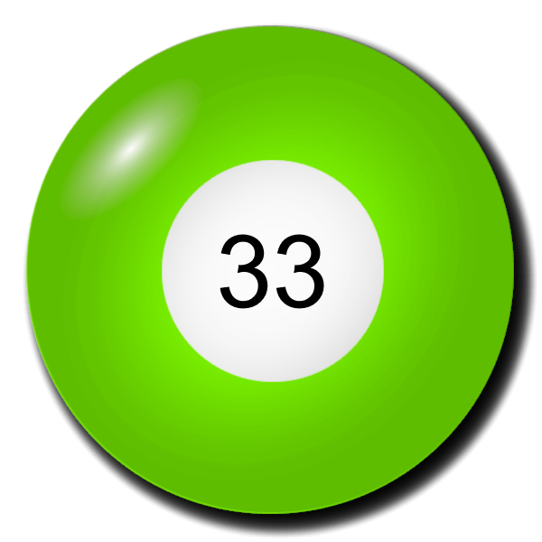
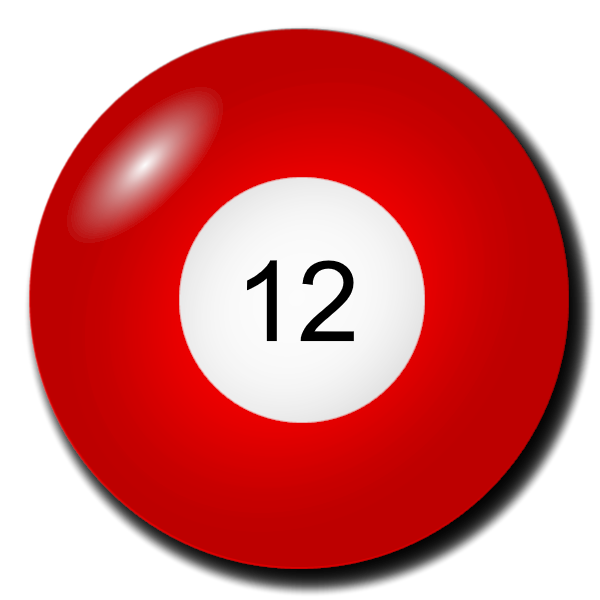

Korábbi sorsolások
Leggyakoribb számok
Leghasonlóbb számsorok
Leghosszabb sorozatok számsorban
Legkisebb összegű számsorok
Grafikonok
Érdekes történetek
A 3 leghosszabb sorozatot tartalmazó számsor
3 egymást követő szám

3 egymást követő szám

3 egymást követő szám